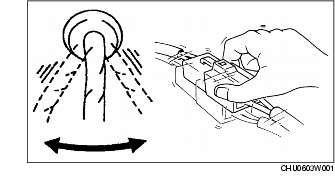
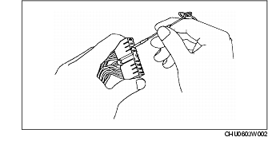

Precaution
Intermittent Concern Troubleshooting
Vibration method
- • If a malfunction occurs or becomes worse while driving on a rough road or when the engine is vibrating, perform the following steps.
- • There are several reasons why vehicle or engine vibration could cause an electrical malfunction. Inspect the following:
- - Connectors not fully seated.
- - Wiring harnesses not having full play.
- - Wires laying across brackets or moving parts.
- - Wires routed too close to hot parts.
- • An improperly routed, improperly clamped, or loose harness can cause wiring to become pinched between parts.
- • The connector joints, points of vibration, and places where wiring harnesses pass through the firewall, body panels and other panels are the major areas to be inspected.
Inspection method for switch and/or sensor connectors or wires
1. Connect the WDS or equivalent to the DLC-2.
2. Turn the ignition switch to the ON position (engine off).
3. Access PIDs for the switch you are inspecting.
4. Turn the switch on manually.
5. Slightly shake each connector or wiring harness vertically and horizontally while monitoring the PID.

Inspection method for sensors
1. Connect the WDS or equivalent to the DLC-2.
2. Turn the ignition switch to the ON position (engine off).
3. Access PIDs for the switch you are inspecting.
4. Vibrate the sensor slightly with your finger.
- • If the PID value is unstable or a malfunction occurs, inspect for poor connection and/or poorly mounted sensor.
Connector terminal check method
1. Inspect the connection of each female terminal.
2. Insert the male terminal and then fit the female terminal side to female terminal. Inspect whether the malfunction is in the female terminal.
